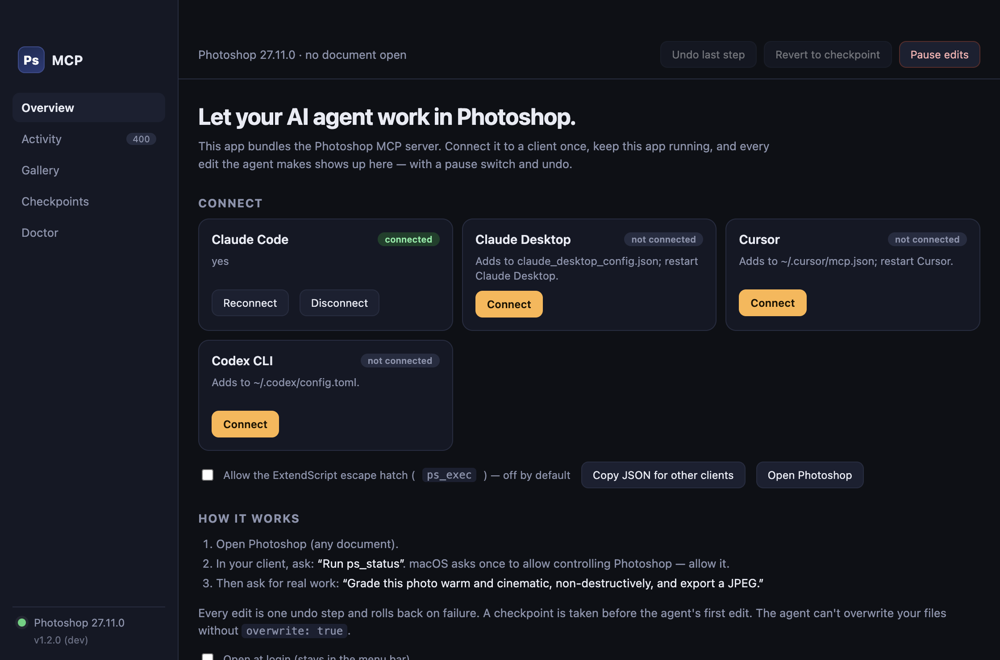
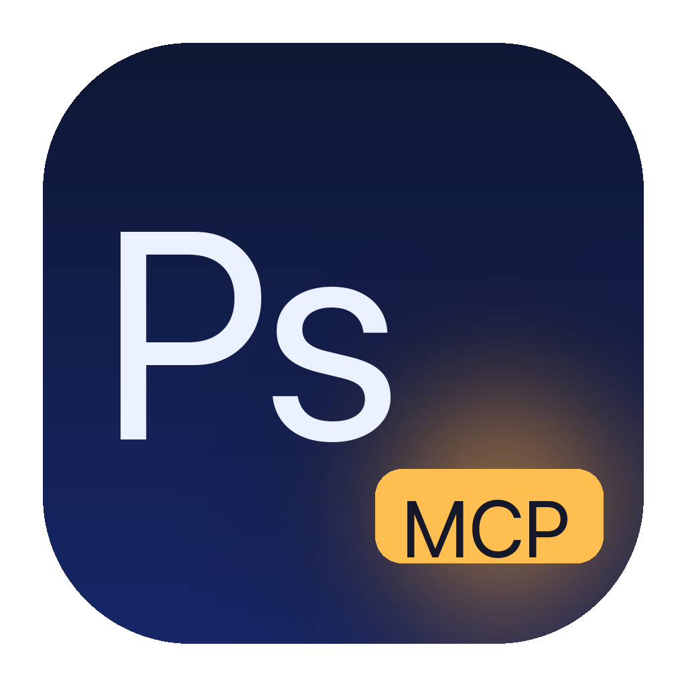

Your agent can see.
Now it can edit.

Photoshop
MCP
MCP
Claude Code · Claude Desktop · Cursor · Codex

 RawGraded by the agent
RawGraded by the agent
00:01ps_render
00:02ps_selection subject
00:03ps_adjustment curves
00:04ps_mask add
00:06ps_document save
Adjustment layers · AI Select Subject · masks · sRGB export.
Built so you can leave it running.
1
Checkpoint before the first edit
A history snapshot and a copy of unsaved work on disk.
2
Your files stay yours
Overwriting or discarding needs your explicit OK.
3
One undo per step
Undo the agent's last step, or revert to the checkpoint.
Kill switch
Pause edits

Download for Mac
kathandesai.com/photoshop-mcp
Free · MIT · Apple silicon & Intel